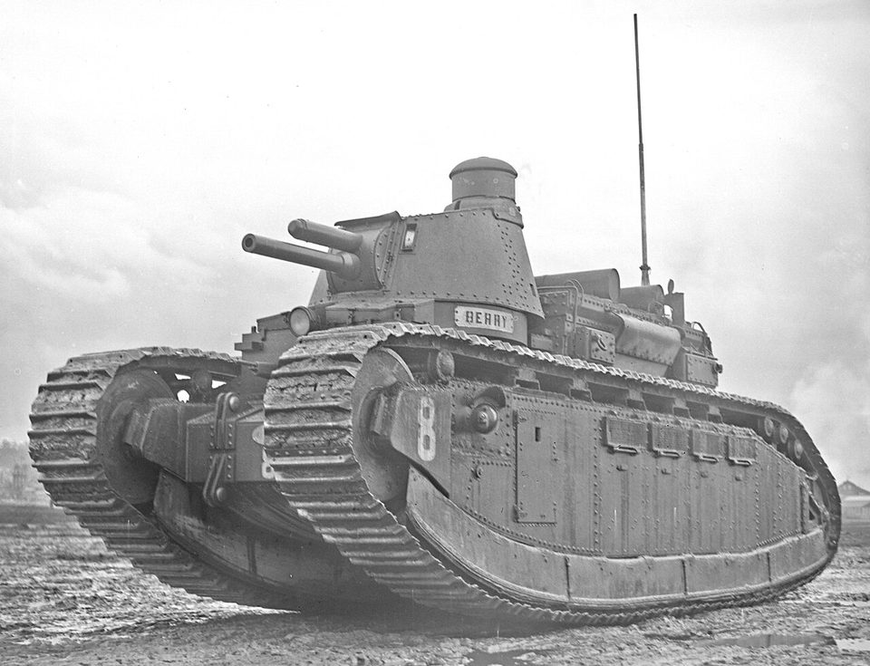
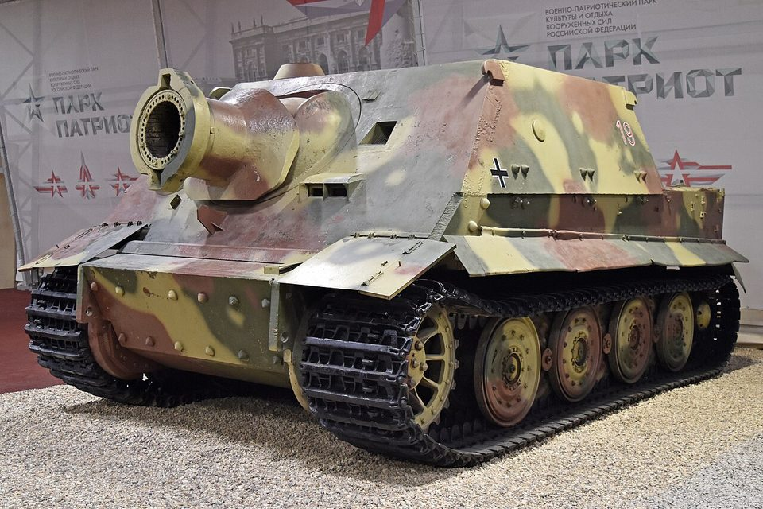

Lista
Los 10 tanques más pesados
Los carros de combate más pesados de la enciclopedia, del Maus de 188 toneladas al IS-7, con su peso y su historia.
Peso en toneladas según las fichas. Casi todos son prototipos o vehículos fabricados en muy pocas unidades: a partir de cierto peso, ningún puente ni ferrocarril los soportaba.

1 · Alemania188 t
El carro más pesado jamás construido. Solo se terminaron dos.

2 · Alemania140 t
Solo llegó a montarse el casco.

3 · Estados Unidos86 t
Cuatro orugas y 305 mm de blindaje frontal.

4 · Reino Unido81,3 t
Diseñado para una guerra de trincheras que no volvió.

5 · Reino Unido79 t
Un carro de asalto británico con siete tripulantes.

6 · Alemania71,7 t
El blindado más pesado fabricado en serie durante la guerra.

7 · Alemania69,8 t
El carro de serie más pesado de la guerra.

8 · Francia69 t
El carro más pesado que ha llegado a estar en servicio.

9 · Unión Soviética68 t
Rechazado por ser demasiado pesado para puentes y trenes.

10 · Alemania68 t
Un lanzacohetes de 380 mm sobre el chasis del Tiger I.